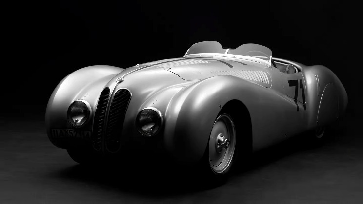

BMW 328 Bügelfalte Roadster, 5,6 млн. дол.
Один з найкращих автомобілів свого часу. Примірник, проданий за рекордну суму, був випущений в 1937 р. на заводі в Мюнхені. Він є гоночною версією BMW 328 серії. У період з 1936 по 1940 виробили 464 машини цієї моделі. У базовій комплектації родстер оснащувався двигуном потужністю 80 к. с., який забезпечував швидкість 150 км/год. Невелика вага (830 кг) та надійна конструкція дозволили реалізувати потенціал машини в автоспорті.
Найдорожчий автомобіль BMW брав участь у численних автоперегонах, включаючи “24 години Ле-Мана”, Tourist Trophy, а також Mille Miglia. Він був потужнішим на 50 к. с. та легший на 105 кг, ніж серійні зразки. Прізвисько машини походить від складок на верхній частині крил, які отримали назву Bügelfalte – “складки на штанах”. Унікальний кузов спроектував Вільгельм Кайзер, співробітник дизайнерського відділу BMW. Машина могла розганятися до 215 км/год.
Після Другої світової війни у рамках репарації спортивний родстер потрапив до СРСР. За однією з версій, він дістався радянському авіаконструктору Артему Мікояну, який віддав автомобіль синові. За іншою — ним користувався син ще одного Мікояна, голови Президії Верховної Ради СРСР. Як би там не було, в 1947 р. машина знайшла нового власника в особі московського таксиста, який займався автоспортом. У 1970-х роках. господарем Bügelfalte став рижанин Гвідо Адамсон, який змінив його на вживаний “ВАЗ”. У 2001 р. автомобіль було продано до Німеччини. Після чергової зміни власника у 2010 р. унікальний родстер виставили на аукціон у Монако, де за нього і заплатили фантастичну суму.
Роботи зі створення спортивного родстера розпочалися у 1935 році. Новинка мала замінити модель BMW 319/1. Дизайн цього автомобіля розроблявся під керівництвом Петра Шимановського. Технічну частину розробляв Фріц Фідлер. Він ввів у цю розробку безліч нових ідей, які дозволили BMW 328 не раз перемагати в автоперегонах.
Автомобіль був уперше представлений на Міжнародній гонці Ейфеля на трасі Нюрбургрінг 14 червня 1936 року.
У 1936 році було збудовано всього три BMW 328. Це були гоночні автомобілі, вони мали полегшений, позбавлений дверних отворів кузов і цільне вітрове скло. Цілком обладнані для повсякденної експлуатації автомобілі стали доступні тільки з початком серійного виробництва в лютому 1937 року.
Незважаючи на досить високу на ті часи ціну в 7400 рейхсмарок, покупці готові були чекати на свої машини по кілька місяців.
Початок війни призводить до припинення випуску автомобілів. З квітня 1936 по вересень 1939 виробили всього 464 автомобіля BMW 328, включаючи шасі, передані різним кузовним ательє. Невелика кількість машин була зібрана з деталей, що збереглися вже в післявоєнні роки.
До 1939 року за ліцензією з німецьких деталей автомобіль також збирався на британському заводі Frazer Nash.